Night of 17 Nov 26 · three items waiting for the Tracker's next batch, each made ready for your answer. Nothing in the app has changed. Every picture is the real app (demo data). Today is the app as it is; Proposed has the change drawn in, marked in pink with a number; each number is named in the words beside it. Tap a picture to see it bigger.
Open now: answer by number, or "all as recommended"
A medical input cannot be cancelled directly: a medical never goes on the Ground Programme, and the cancel (CX) button is only on Ground Programme rows. But an input keeps its cancel when its type is changed, and a cancelled activity can be changed into a medical one. I made one tonight through the app's own buttons, signed in as an admin:
Step 1 (1a, 1b): on the Scheduler Board, Thursday 16 Jul, Ranger's Appointment on the Ground Programme: CX, reason WX, Cancel line.
Step 2 (1c, 1d): on the Inputs calendar, Ranger's input opened: its title still shows the red CX WX tag. Type changed to OML, Save, "No document".
The result is an OML for Ranger on 16 Jul, still marked cancelled for WX. Afterwards no button takes the cancel off. Only Undo does, or changing the type back.
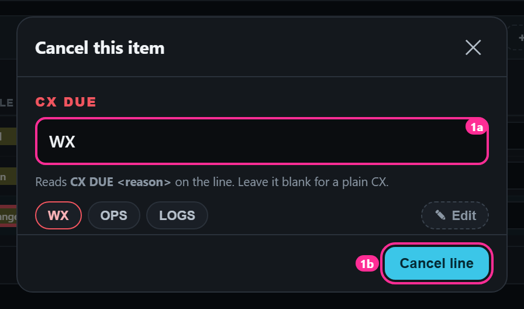
Step 1. The board's CX on Ranger's Appointment: reason WX (1a), Cancel line (1b).
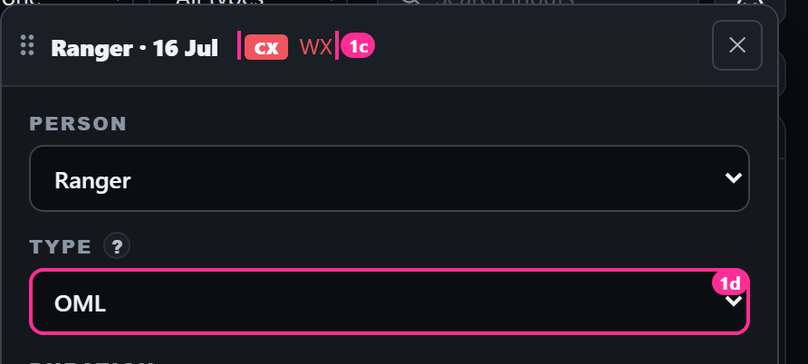
Step 2. The same input's window: still cancelled (1c), its type changed to OML (1d).
What it does: three places disagree
The Inputs calendar strikes "Ranger · OML" through, as cancelled (1e).
The Medical tab (as of 16 Jul) lists Ranger under Medically down, with no sign of the cancel (1g).
The Tracker counts it: Ranger, added as a student with his course starting 1 Jul 26, reads No. of Down Days "1 day" (1i), and its window lists "OML 16 Jul, 1 day" (1h).
Example. Ranger's appointment on 16 Jul is called off for weather. The same morning he goes to the doctor instead, and the scheduler changes that input to OML rather than filing a new one. The calendar now says the OML is cancelled, the Medical tab says Ranger is down, and the Tracker gives him a down day. A scheduler reading the calendar would plan Ranger to fly; the Tracker and the Medical tab would not.
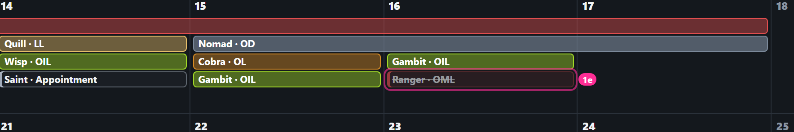
Today. The Inputs calendar, 16 Jul: "Ranger · OML" struck through as cancelled (1e).
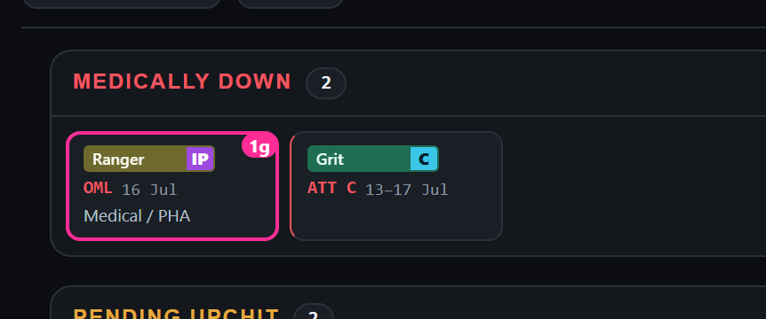
Today. The Medical tab, as of 16 Jul: Ranger medically down (1g).
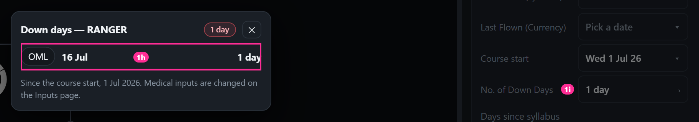
Today. The Tracker: "1 day" (1i), and the window lists the cancelled OML (1h).
The choice
A (recommended): changing an input into a medical one takes its cancel off. A cancel belongs to a planned activity that did not happen; a medical is a different thing, and the app already treats a change of type as a fresh start (an input taken off the programme comes back when its type changes). Then all three places agree: Ranger is down, and the Tracker counts the day. A medical can then never be cancelled, which matches there being no button to cancel one.
B: keep the cancel, and have the Medical tab and the Tracker leave a cancelled medical out, as the calendar already does. All three agree too, but a cancel nobody can take off stays on a medical, and he is shown fit while the doctor's input says he is not.
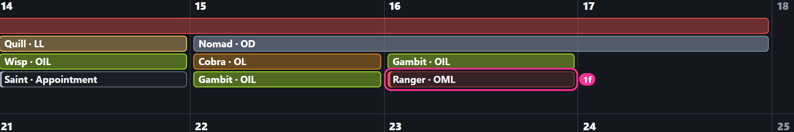
Proposed (A). The change of type took the cancel off: "Ranger · OML" is a plain medical (1f). The Medical tab and the Tracker stay as they are today.
On a phone
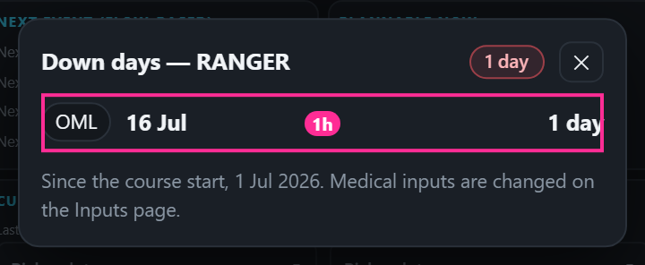
Today. The same route made on a phone; the Tracker counts the cancelled OML (1h).
Q2 · The Tracker's menus under the keys
On a desktop, the Tracker's three menus (File, Course's pencil, Syllabus's pencil) do not work under the keys the way the board's menus do. You ruled the board's way on 5 and 8 Nov (D1646, D1771), and gave the Tracker's menus the board's look (D1706), but nothing was said about their keys.
Today: Enter opens the menu but the keys stay on the button, and ↓ does nothing (2a). Only Tab reaches the first item, and it wears the browser's white ring (2b), not the app's cyan one. Escape closes the menu and the keys go back to the page, not to the button.
Proposed: Enter or ↓ opens the menu with the keys on its first item, in the app's cyan ring (2c); ↓ and ↑ move through it (2d); Enter presses the item; Escape closes it and puts the keys back on the button. These are the board's own keys and ring.
Keys: Enter or ↓ open · ↓↑ move · Enter press · Esc close, back on the button · Tab leaves as on the board.
On a phone nothing changes: there are no keys, and a tap shows no ring.
Recommended: yes, as drawn. Other choice: leave them; the Tracker is mostly used by tapping, but its menus would be the only ones in the app that behave differently under the keys.
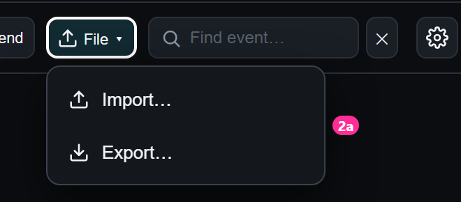
Today. Enter opens File (2a); the keys stay on the button and ↓ does nothing.
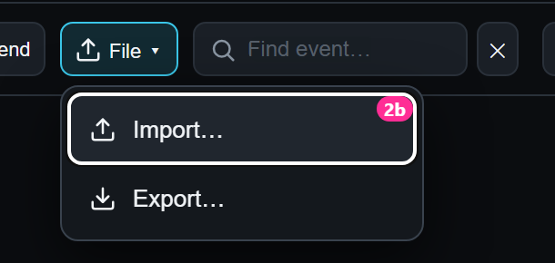
Today. Tab reaches Import… in the browser's white ring (2b).
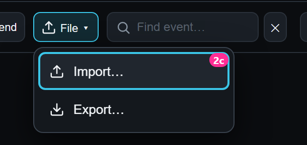
Proposed. Enter opens on Import…, cyan ring (2c).
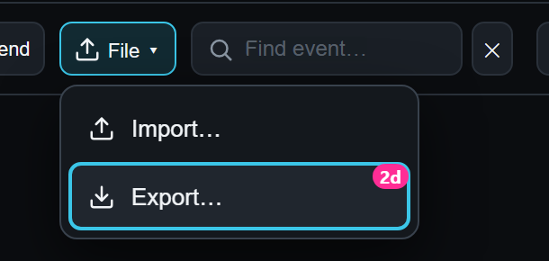
Proposed. ↓ moves to Export… (2d).
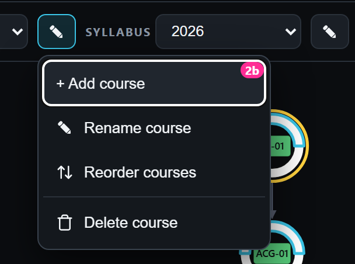
Today. The Course menu, white ring (2b).
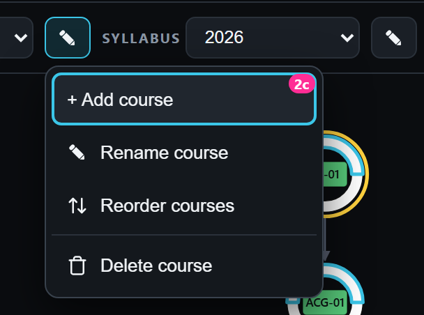
Proposed. Cyan ring (2c).
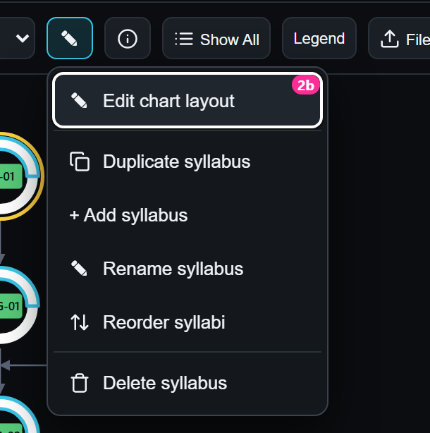
Today. The Syllabus menu, white ring (2b).
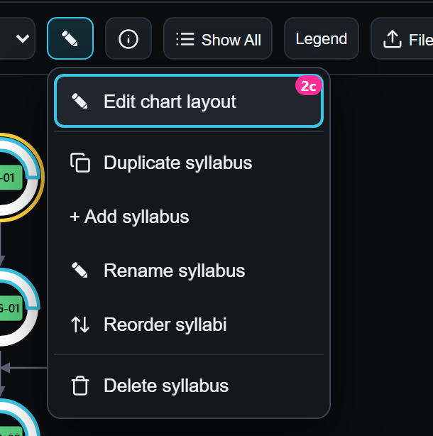
Proposed. Cyan ring (2c).
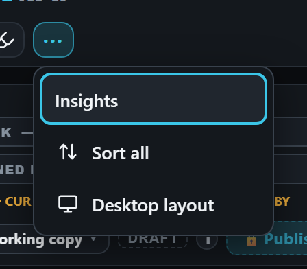
For comparison. The board's ⋯ menu under the keys, as you approved it on 8 Nov (D1771).
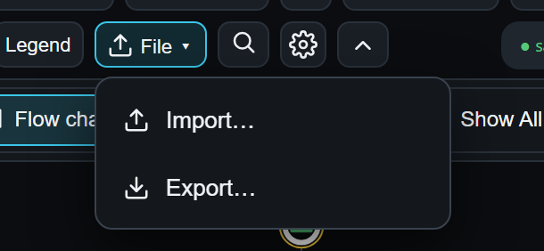
On a phone, today and proposed alike. File opened by a tap: no ring.
Q3 · + Add without a typed name
You ruled on 8 Nov that no student is added by a typed name (D1931): every student is picked from the roster. Before it is built, here is the window, since its words and buttons change (your rule that anything new a person sees is drawn first, D1625).
The typed box goes (3a), and so does OK (3b): a tap on a name already adds him at once, so OK would only ever add a typed name. Cancel is left alone (3c). Enter in the search still adds the one man it matches, as it does today.
A search that matches nobody says only "Nobody on the roster matches “Zzyx”." (3e). Today it goes on "OK adds them as a new crew member." (3d), and OK would add ZZYX as a student linked to nobody, with "—" for his down days.
With nobody on the roster at all, the window says "Nobody is on the squadron roster yet." and adds nobody (3f). Today it shows a plain "Student callsign:" box instead.
Example. A scheduler adds a new student, types "Recon" in the search and taps him: he is added with his course start, as today. He types "Zzyx" by mistake: today OK adds a student nobody can match to the roster, whose down days never count; with the change, the line says nobody matches and nothing is added.
Recommended: as drawn. Other choice: keep OK as a second way to add the one name the search has narrowed to. It adds nothing a tap or Enter does not already do.
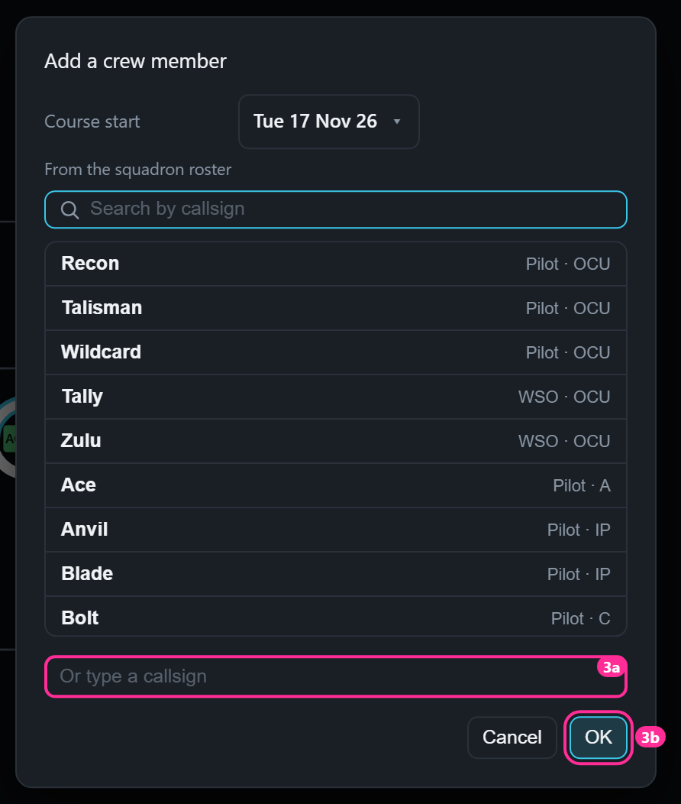
Today. "Or type a callsign" (3a) and OK (3b).
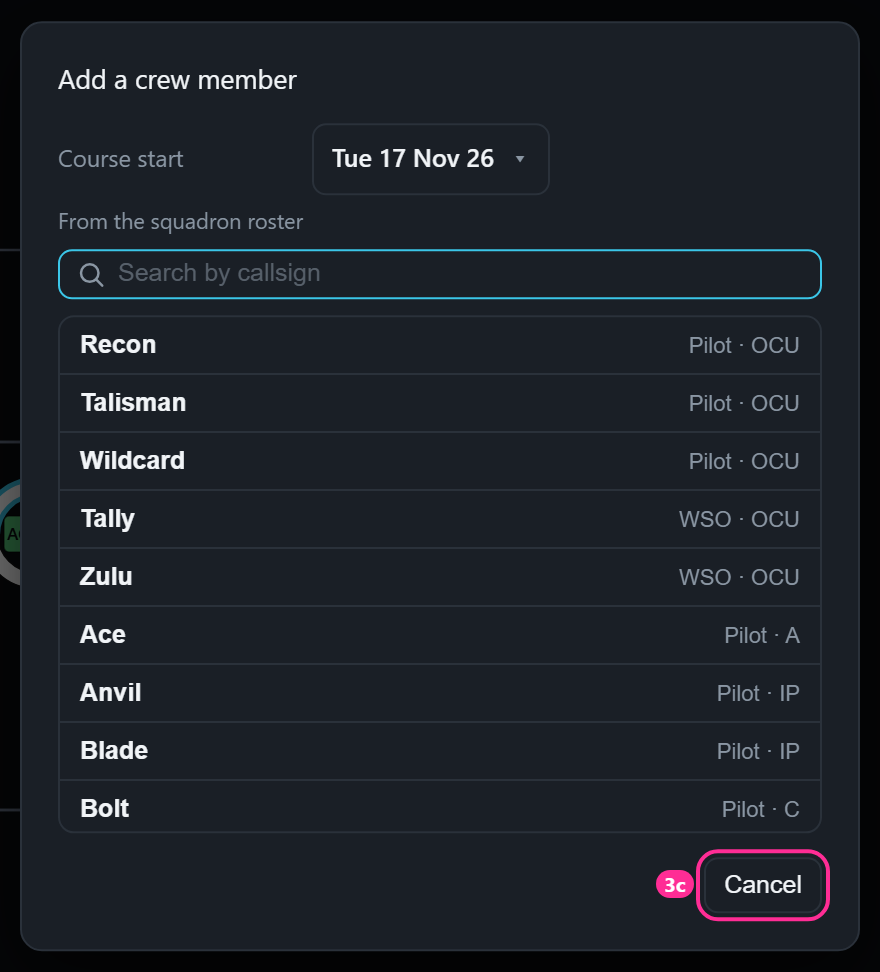
Proposed. No typed box and no OK; Cancel (3c).
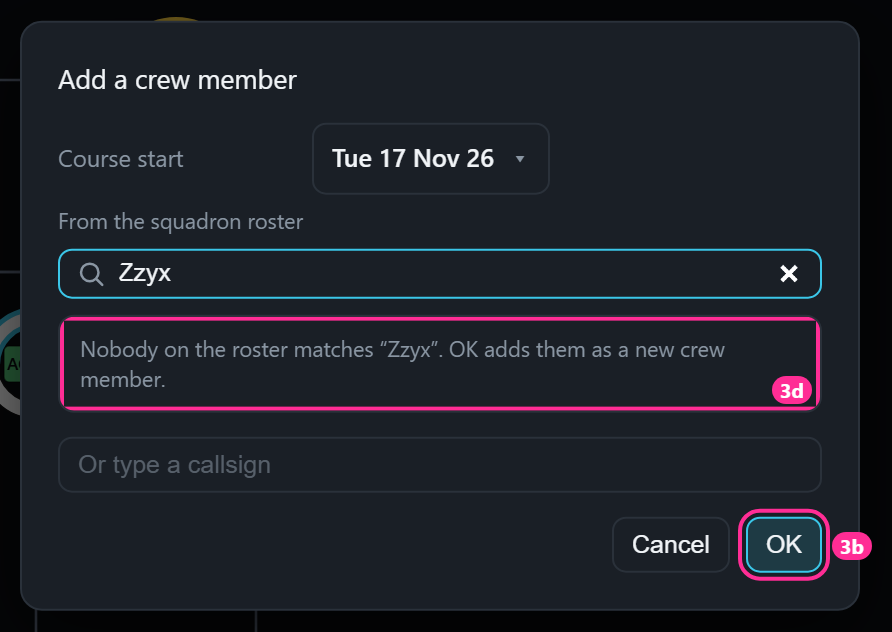
Today. A search matching nobody (3d); OK or Enter adds "ZZYX".
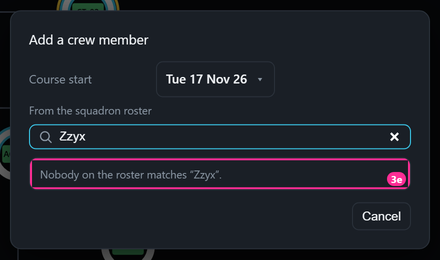
Proposed. "Nobody on the roster matches “Zzyx”." and nothing to add (3e).
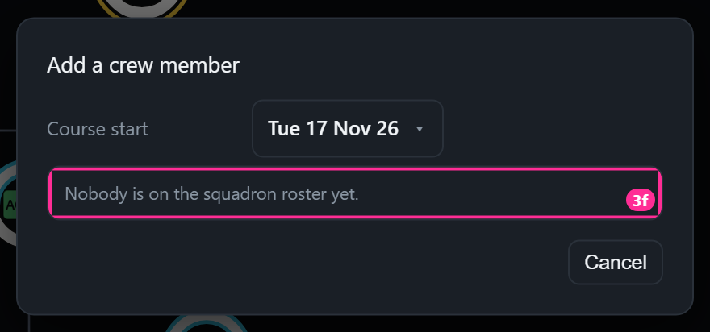
Proposed. Nobody on the roster yet (3f): nothing can be added.
On a phone
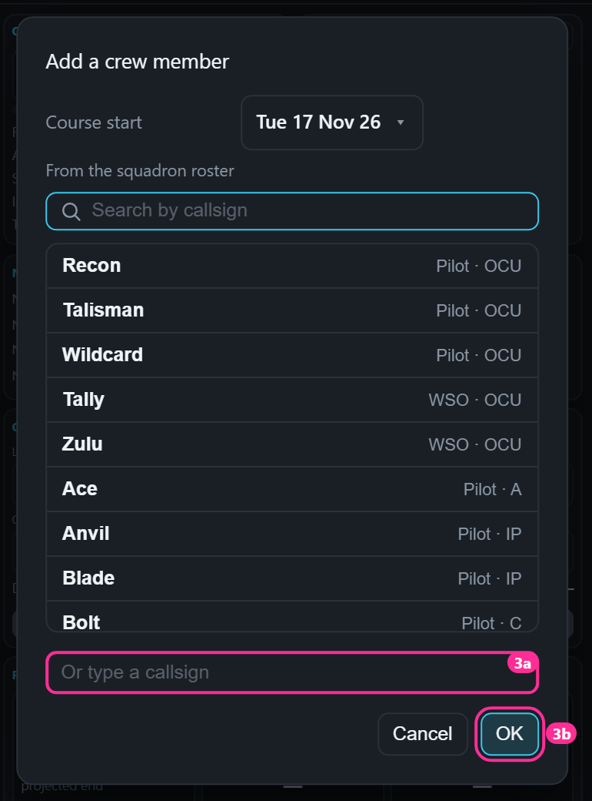
Today
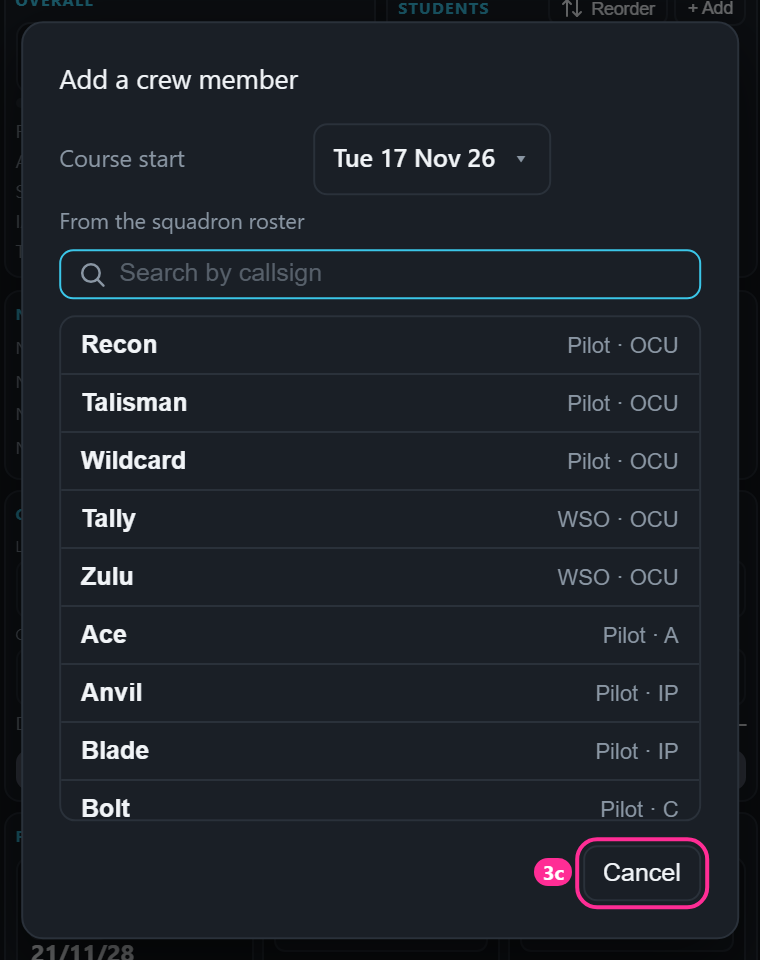
Proposed
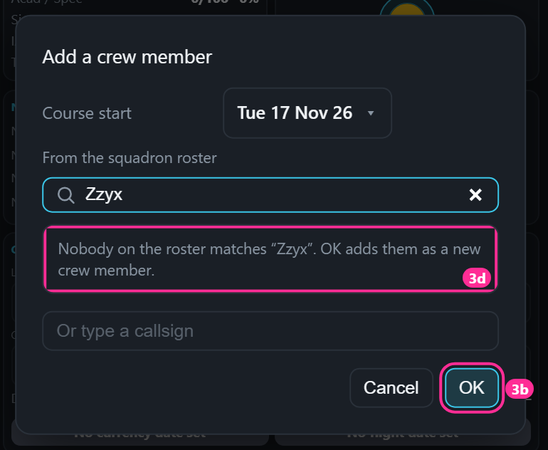
Matching nobody, today
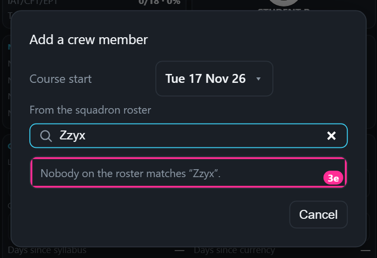
Matching nobody, proposed
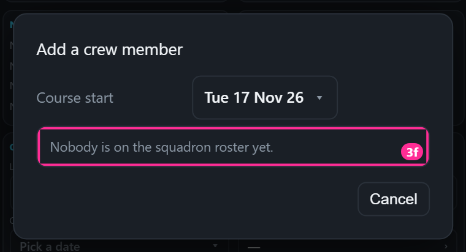
Nobody on the roster, proposed
What is not drawn, and why
Q1's choice B. It changes only what the Medical tab and the Tracker count, so it would look like the Medical tab without Ranger and the Tracker reading "—". It is described, not drawn.
Q1 on a phone, beyond the Tracker. The route was made on a phone too; only the Tracker's window is pictured, since the calendar and the Medical tab look the same as on a desktop, only smaller.
Q2's proposed keys in motion. The proposed pictures were taken with the keys moved by Tab (the app's own move today), with the board's cyan ring put on the Tracker's menu items. ↑ and Escape back on the button are described, not drawn.
Q3's "nobody on the roster" today. The demo always has people on the roster, so the plain "Student callsign:" box cannot be reached to picture. The proposed picture is drawn from the nearest real state (a search that matches nobody), with its words changed and the search box hidden.